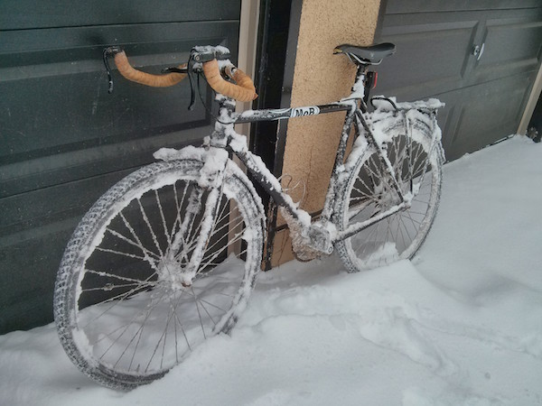

Easybuild and Docker
Building binary packages quickly and cleanly
Robert Schmidt|roschmidt@toh.ca


Who am I?
- Worked at SHARCNET until 2007
- Contributor to EasyBuild
- SysAdmin/Software Support for a bioinformatics group in a stem cell research program

I'm also crazy and bike to work in the winter ... in Ottawa
What I hope to cover
- EasyBuild highlights
- Docker
- Getting started
What can EasyBuild do?
EasyBuild is the product of an active community of HPC specialists world-wide.
- Strict version resolution means easier community support
- Can take fairly simple configs and turn them into built software
- New version will make that even easier using YAML
- Testing framework and good coverage
- Future development includes support for rpath
Why Docker?
- Isolation
- Runs in a separate process namespace, but lighter than a VM
- Clean
- Like chroot, active community, lots of software
- Already in use in environment
Some examples
[easybuild@a68d53641587 ~]$ eb bzip2-1.0.6.eb --package
== temporary log file in case of crash /tmp/eb-fZ7Q26/easybuild-9n1eil.log
== processing EasyBuild easyconfig /software/easybuild-develop/easybuild-easyconfigs/easybuild/easyconfigs/b/bzip2/bzip2-1.0.6.eb
== building and installing bzip2/1.0.6...
== fetching files...
== creating build dir, resetting environment...
== unpacking...
== patching...
== preparing...
== configuring...
== building...
== testing...
== installing...
== taking care of extensions...
== postprocessing...
== sanity checking...
== cleaning up...
== creating module...
== permissions...
== packaging...
== COMPLETED: Installation ended successfully
== Results of the build can be found in the log file /software/easybuild/software/bzip2/1.0.6/easybuild/easybuild-bzip2-1.0.6-20160119.180510.log
== Build succeeded for 1 out of 1
== Temporary log file(s) /tmp/eb-fZ7Q26/easybuild-9n1eil.log* have been removed.
== Temporary directory /tmp/eb-fZ7Q26 has been removed.
[root@a68d53641587 build]# cd /software/easybuild/packages/
[root@a68d53641587 packages]# ls -ltra
total 492
-rw-rw-r-- 1 easybuild easybuild 494099 Jan 19 18:05 bzip2-1.0.6-eb_2.6.0.dev0-1.x86_64.rpm
drwxr-xr-x 8 easybuild easybuild 4096 Jan 19 18:05 ..
drwxrwxr-x 2 easybuild easybuild 4096 Jan 19 18:05 .
[root@a68d53641587 packages]# rpm -qlp bzip2-1.0.6-eb_2.6.0.dev0-1.x86_64.rpm
/software/easybuild/modules/all/bzip2/1.0.6
/software/easybuild/software/bzip2/1.0.6/bin/bunzip2
/software/easybuild/software/bzip2/1.0.6/bin/bzcat
/software/easybuild/software/bzip2/1.0.6/bin/bzcmp
/software/easybuild/software/bzip2/1.0.6/bin/bzdiff
/software/easybuild/software/bzip2/1.0.6/bin/bzegrep
/software/easybuild/software/bzip2/1.0.6/bin/bzfgrep
/software/easybuild/software/bzip2/1.0.6/bin/bzgrep
/software/easybuild/software/bzip2/1.0.6/bin/bzip2
/software/easybuild/software/bzip2/1.0.6/bin/bzip2recover
/software/easybuild/software/bzip2/1.0.6/bin/bzless
/software/easybuild/software/bzip2/1.0.6/bin/bzmore
/software/easybuild/software/bzip2/1.0.6/easybuild/bzip2-1.0.6-easybuild-devel
/software/easybuild/software/bzip2/1.0.6/include/bzlib.h
/software/easybuild/software/bzip2/1.0.6/lib/libbz2.a
/software/easybuild/software/bzip2/1.0.6/man/man1/bzcmp.1
/software/easybuild/software/bzip2/1.0.6/man/man1/bzdiff.1
/software/easybuild/software/bzip2/1.0.6/man/man1/bzegrep.1
/software/easybuild/software/bzip2/1.0.6/man/man1/bzfgrep.1
/software/easybuild/software/bzip2/1.0.6/man/man1/bzgrep.1
/software/easybuild/software/bzip2/1.0.6/man/man1/bzip2.1
/software/easybuild/software/bzip2/1.0.6/man/man1/bzless.1
/software/easybuild/software/bzip2/1.0.6/man/man1/bzmore.1
rob@ogic:~/syncthing/eb-devel-install$ docker-compose run BuildToolchain help
usage: easy_build [-h] {build,yumrepo} ...
easy_build: error: invalid choice: 'help' (choose from 'build', 'yumrepo')
[nisrob@maraba eb-devel-install]$ docker-compose run BuildToolchain build foss-2015a foss-2015b
== temporary log file in case of crash /tmp/eb-VF8Idh/easybuild-rKb3Oe.log
== FPM/1.3.3-Ruby-2.1.6 is already installed (module found), skipping
== No easyconfigs left to be built.
== Build succeeded for 0 out of 0
== Temporary log file(s) /tmp/eb-VF8Idh/easybuild-rKb3Oe.log* have been removed.
== Temporary directory /tmp/eb-VF8Idh has been removed.
calling eb with args: ['--package', '--sourcepath=/export/easybuild/sources', '--download-timeout=60', '--prefix=/software/easybuild', '--packagepath=/repos/foss-2015a', 'foss-2015a.eb', '--robot']
== temporary log file in case of crash /tmp/eb-gJ2eZa/easybuild-NdTeem.log
== resolving dependencies ...
== processing EasyBuild easyconfig /software/easybuild-develop/easybuild-easyconfigs/easybuild/easyconfigs/g/GCC/GCC-4.9.2.eb
== building and installing GCC/4.9.2...
== fetching files...
== creating build dir, resetting environment...
== unpacking...
...